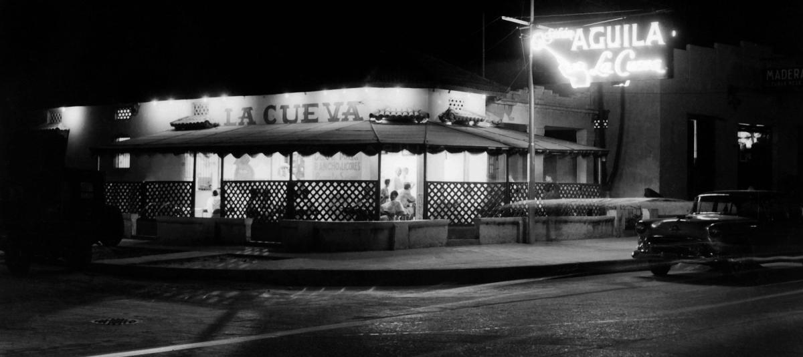

La Cueva y Gabriel García Márquez
Lugares Misteriosos / Historia y memoria cultural

Un refugio para la imaginación
En el barrio Boston de Barranquilla existe un lugar que guarda una de las historias culturales más fascinantes del Caribe colombiano: La Cueva. Este emblemático establecimiento fue mucho más que un bar o restaurante. Durante las décadas de 1950 y 1960 se convirtió en un punto de encuentro para escritores, periodistas, pintores e intelectuales que compartían conversaciones sobre literatura, arte, cine y política.
La historia comenzó en 1954, cuando una antigua tienda de barrio conocida como El Vaivén fue transformada en un espacio de encuentro por Alfonso Fuenmayor y Álvaro Cepeda Samudio. El establecimiento, relacionado con Eduardo Vilá, empezó a recibir a un grupo de intelectuales que posteriormente sería conocido como el Grupo de Barranquilla. Entre sus visitantes más destacados se encontraba Gabriel García Márquez.
En aquellas reuniones, García Márquez compartió conversaciones y experiencias con figuras como Álvaro Cepeda Samudio, Alfonso Fuenmayor, Germán Vargas y el pintor Alejandro Obregón. Las tertulias se caracterizaban por largas discusiones, bromas, conversaciones literarias y una particular libertad creativa. Aquel ambiente contribuyó a fortalecer las relaciones intelectuales y artísticas del grupo.
La relación entre La Cueva y la literatura de García Márquez también quedó reflejada en Cien años de soledad. En esta novela, el escritor evocó a varios de sus compañeros del Grupo de Barranquilla mediante personajes y referencias literarias. La experiencia compartida con estos intelectuales formó parte del entorno cultural que acompañó sus primeros años como escritor y periodista.
El establecimiento también fue escenario de encuentros entre importantes artistas colombianos. Alejandro Obregón, Enrique Grau, Cecilia Porras y otros creadores hicieron parte de ese universo cultural. Fotografías, pinturas y recuerdos de aquellas reuniones permiten reconstruir la atmósfera de una época en la que Barranquilla se convirtió en un importante centro de intercambio artístico e intelectual.
Con el paso de los años, La Cueva adquirió un enorme valor histórico y cultural. El Ministerio de Cultura la reconoció como Bien de Interés Cultural de carácter nacional mediante la Resolución 1583 de 2002. Actualmente, el lugar continúa relacionado con la promoción de las artes, la literatura y la memoria del Grupo de Barranquilla.
Hoy, visitar La Cueva es acercarse a un capítulo fundamental de la historia cultural colombiana. Sus paredes, fotografías y recuerdos evocan las conversaciones de quienes transformaron la literatura y el arte nacional. Su misterio no está relacionado con apariciones sobrenaturales, sino con la fascinante historia de un lugar donde las ideas, la imaginación y la amistad dejaron una huella imborrable.
Personajes del Grupo de Barranquilla
Gabriel García Márquez: escritor y periodista colombiano, reconocido internacionalmente por su obra literaria y ganador del Premio Nobel de Literatura en 1982.
Álvaro Cepeda Samudio: escritor, periodista y cineasta, una de las figuras fundamentales de la literatura moderna colombiana.
Alfonso Fuenmayor: periodista, escritor y uno de los principales impulsores de las reuniones culturales del Grupo de Barranquilla.
Alejandro Obregón: pintor colombiano, reconocido por su aporte al arte moderno y por su relación con los intelectuales de La Cueva.
Germán Vargas Cantillo: periodista y crítico literario, integrante destacado del Grupo de Barranquilla.
Fuentes y referencias
Ministerio de Cultura de Colombia. (2002). Resolución 1583 de 2002. Declaratoria de La Cueva como Bien de Interés Cultural de carácter nacional.
Consultar resoluciónSeñal Colombia. (2023). Así fue La Cueva del Grupo de Barranquilla.
Consultar artículoVisit Barranquilla. Ruta Gabo. Recorrido por los lugares relacionados con Gabriel García Márquez en Barranquilla.
Consultar ruta culturalFundación La Cueva. Historia y legado cultural del Grupo de Barranquilla.
Consultar Fundación La Cueva